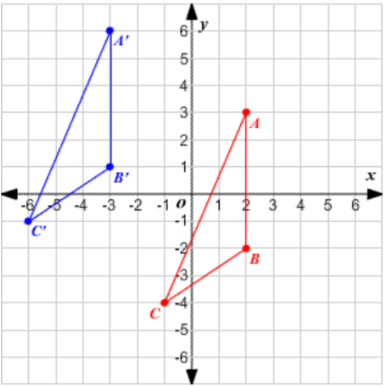
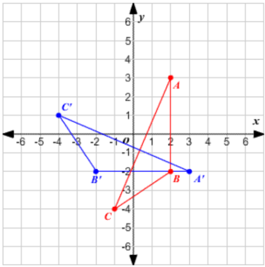
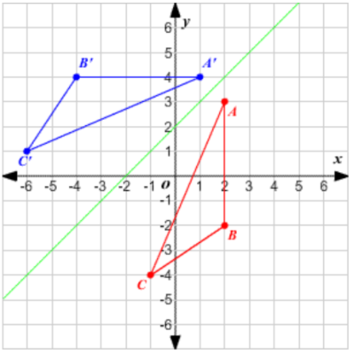
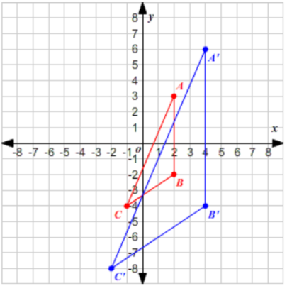

Unidad 6
6.4 Transformaciones
Las transformaciones consisten en realizar cambios de algunos aspectos de cierta figura geométrica.
Algunas de las principales transformaciones que podemos hacer a una figura son las siguientes.
Traslación.
Una traslación es un desplazamiento de una figura. Por ejemplo, en la figura siguiente, el triángulo ABC es trasladado 5 unidades a la izquierda y 3 unidades hacia arriba para obtener el triángulo imagen A'B'C' .
Se puede observar que lo que estamos cambiando entre un triángulo y otro, es la posición en el plano cartesiano, sin embargo, los demás aspectos del triángulo original se siguen conservando. Por ejemplo: la longitud de los lados y los ángulos internos de ambos triángulos siguen siendo los mismos.
Rotación.
Un segundo tipo de transformación es la rotación . La figura siguiente muestra el triángulo ABC rotado 90° de acuerdo a las manecillas del reloj respecto del origen.
Al igual que en la transformación anterior, en esta se siguen manteniendo el tamaño de los ángulos y el de los lados, modificándose la posición de los vértices pero de forma circular, permitiendo girar la figura.
Reflejo.
Un tercer tipo de transformación es el reflejo . La figura siguiente muestra el triángulo ABC reflejado a través de la recta y = x + 2.
Se puede observar que nuevamente se cambian las posiciones de los vértices pero conservando el tamaño de los lados y los ángulos. Debido a que las transformaciones vistas hasta ahora conservan la mayoría de aspectos de la figura original, también se les conoce por el nombre de transformaciones rígidas.
Dilación.
Una dilación es una transformación que preserva la forma y orientación de la figura, pero cambia su tamaño. El factor de escala de una dilación es el factor por el cual cada medida lineal de la figura (por ejemplo, una longitud de lado) es multiplicada.
La figura siguiente muestra una dilación con un factor de escala 2, centrada en el origen.
Se puede observar que esta transformación si cambia el tamaño de los lados del triángulo, y con esto cambia también otras propiedades como el área y el perímetro, debido a lo anterior esta no es una transformación rígida.